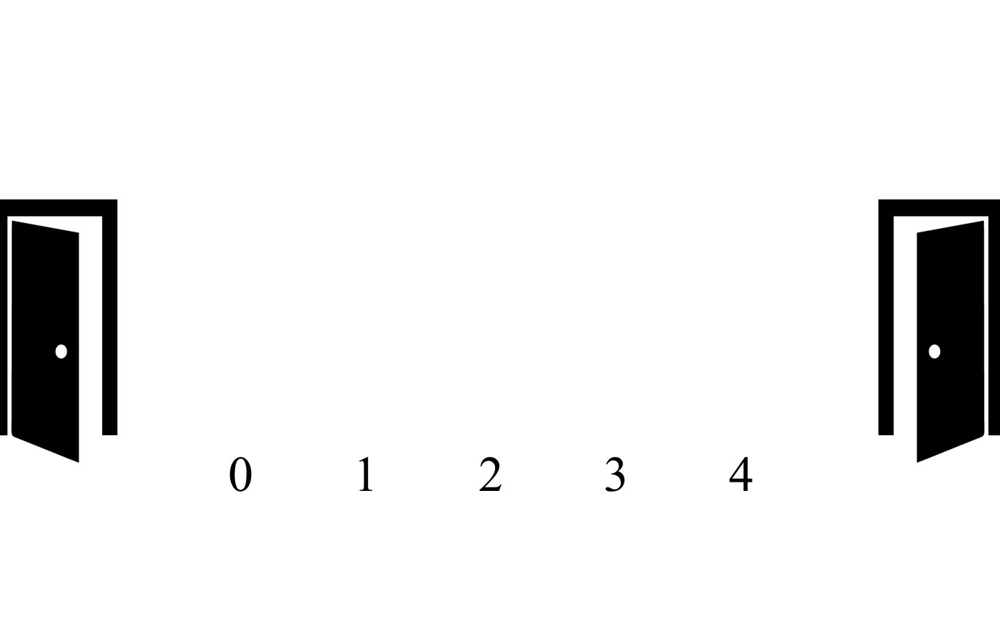

A queue is a linear data structure that applies the First-In-First-Out(FIFO) principle. This means that when inserting and deleting data, the data is inserted to the rear of the structure but data is deleted from the front of the structure. this is similar to waiting in a line(queue) at a store to make a puchase. the first person to get in the line will also be the first person to leave the line. This is shown in the visual below:
In the example above we see that when someone new is added to the queue they are added to the rear. Also, the first person to leave the queue is also the first person who was at the front of the queue. This is done similarly in the queue ADT. When adding data to the queue we use the function called enqueue(value), the value is then added to the rear of the queue. When deleting data fron the queue we use the function called dequeue, this will delete the value that is at the front of the queue. This is shown in the example below:
The queue ADT has 3 funtions:
1. enqueue(value) - inserting data into the queue.
2. dequeue() - deleting data from the queue.
3. display() - displaying the contents of the queue.
The steps to implementing the enqueue function are:
1. Check if the queue is full. (only done when using arrays)
2. If the queue is full, produces an error and exit. (this can only
happen in using an array)
3. If the queue is not full, increments rear to point
next empty space.
4. Inserts data element to the queue location, where rear is pointing.
The steps to implementing the dequeue function are:
1. Check if the queue is empty.
2. If the queue is empty, produces an error and exit.
3. If the queue is not empty, deletes the value at the location that front
is pointing to.
4. decrements front to point to the next
value
A queue can be implemented 2 ways:
1. Using Arrays
2. Using Linked-Lists